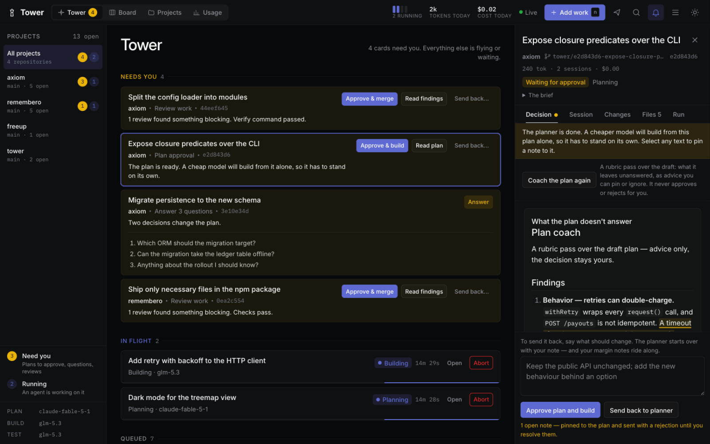
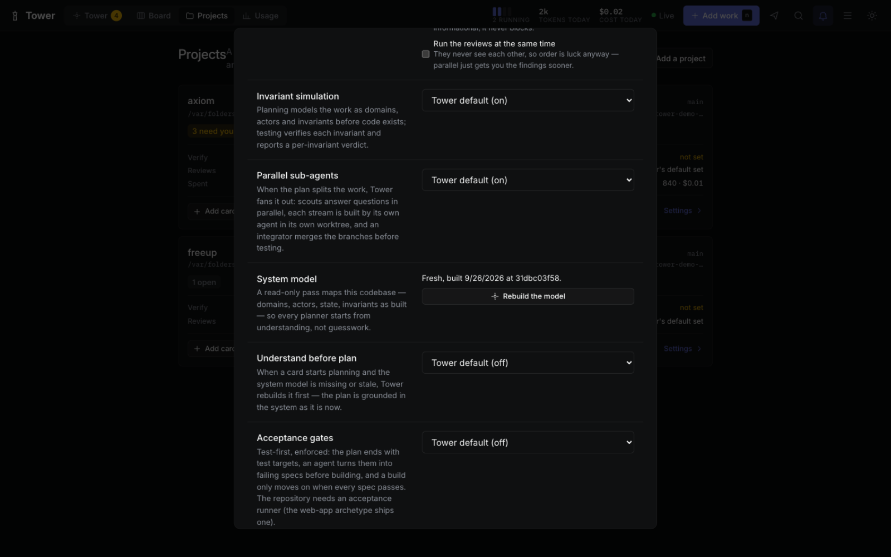
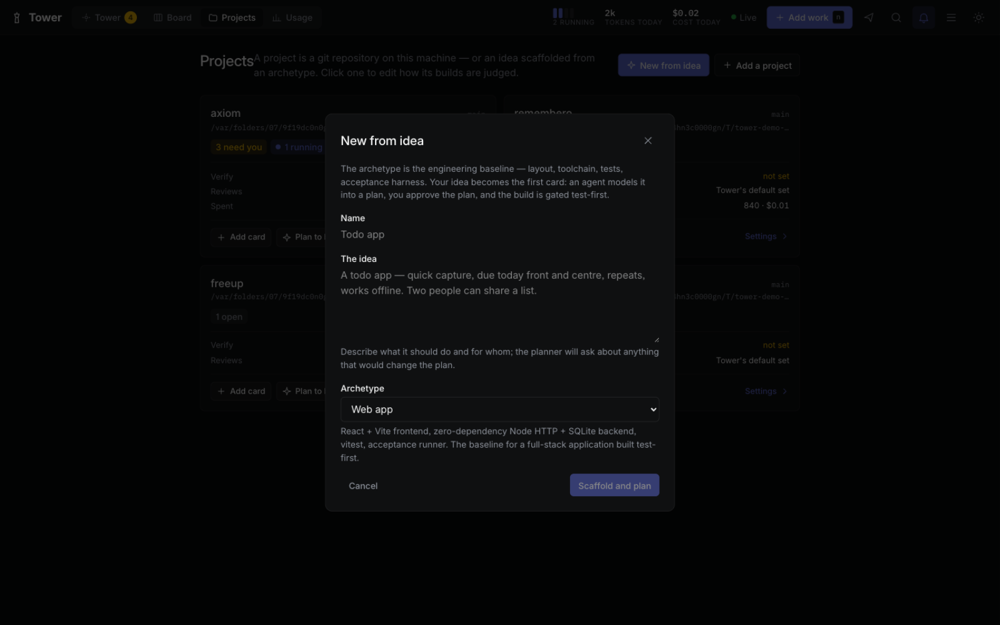

The control tower for coding agents
Turn “make it work” into merged. Delegate the building. Keep the discipline.
Tower runs pi coding-agent sessions across all your projects from one board — the whole life cycle, idea to merged. Hand it an idea and it scaffolds the project from an engineering archetype. Hand it a question and research maps the unknowns before a plan exists. Then a strong model plans against a model of your system, a cheap one builds in its own worktree, gates you write in a sentence decide what is worth testing, and reviewers who never saw the work try to break it — with a spend ceiling on every card. The agents fly; you work the tower: every decision that is yours lands on one amber row, one click each.
pi install git:github.com/rahult/tower
Then type /tower in any pi session. The board opens at 127.0.0.1:4700.
- No cloud
- No telemetry
- Your machine, your keys
- Open source
Needs you these decisions block an agent
In flight agents at work; step in only if you must
Landed today
- Needs you
- An agent is working
- Landed

Retired
The toolchain it replaces
The software life cycle used to be a dozen tabs: a tracker for the work, a board for the status, a queue for the tests, a rota for review, a dashboard for CI. Tower collapses that pipeline — the agents do the stages, the board does the chasing, and your test suite stays the judge.
- Ticket tracker and sprint board
- The queue. Cards carry a brief, a branch and a spend ceiling; global and per-project caps decide what runs.
- Planning meetings
- A planner that models the work before writing a step — domains, actors, invariants — and asks you the questions only you can answer.
- Scaffolding by hand
- “Create a todo app” becomes a project: pick an archetype — web app, CLI tool, JSON API — and Tower lays down the toolchain, the tests and the acceptance harness, then files your idea as the first card. Card one plans the app, not the toolchain.
- The codebase briefing
- A read-only pass maps an existing repository — domains, actors, state, invariants as built, with sources — and the planner starts from that model, not from guesswork. When the model goes stale, a rebuild happens before planning, if you ask for it.
- Spec-to-tickets grooming
- Paste a plan — or point at a card's — and a work-breakdown agent cuts it into self-contained backlog cards. You pick the ones you want; Tower files them in order. A spec becomes a night's queue.
- Branch handoffs
- A git worktree per card. Two cards build in one project at once; your checkout is never touched. Dependent work branches from another card's branch and lands in order.
- The test cycle
- Your verify command judges every build. A failure goes back to a builder with the output; the same failure twice is information, not a third blind retry.
- The review rota
- An adversarial review and a SOLID design review in fresh sessions with no edit access — run at once when you opt in, since they never see each other anyway. Findings wait for you beside the diff.
- CI you write in a sentence
- Flows compose agents and shell gates — a lint command, a size check, a reviewer role — and attach them to the plan, the build or the tests, or fire on an interval. A failed gate sends its own output back to the builder; no model decides whether your checks passed.
- The spike, before the plan
- A deep-research flow maps an unfamiliar question with sources fetched over the network and writes a cited brief — options, trade-offs, what it means for this repository. It runs on a backlog card, and the planner reads the brief.
- Watching CI
- Tower watches the pull request it opened. Failing CI goes back to a builder on its own; a merge settles the card.
- The standup
- The stream is the status: Needs you, In flight, Queued, Landed today — with tokens and cost counted in the strip above.


Flight plan
How a card moves
Tell Tower what you want done — or just tell it the idea. From there the card drives itself through the stages and stops twice, both times for you.
-
An idea becomes a project
On an empty board, create a habit tracker in the command box — or open New from idea and pick an archetype: a web app, a CLI tool, a JSON API. The archetype is a versioned engineering baseline — layout, toolchain, tests, acceptance harness — and Tower scaffolds it into a fresh repository, files your idea as card one, and starts planning. The practices ship with the scaffold; archetypes can turn the acceptance gates on from birth.
-
Unknown ground gets researched first
Not every card starts with a task; some start with a question. An exploring line in the command box — research local-first sync @notes — files the card and runs the deep-research flow on it, right where it rests in the backlog: a survey fetches evidence over the network (docs, repositories, package registries), and a synthesizer writes a cited brief — options with trade-offs, a recommendation, what it means for this codebase. Nothing starts until you say so.
-
A strong model plans, grounded in the system
The planner explores your repository and writes
plan.md. A research brief on the card is read first — its recommendation is context, not command. So is the project's system model: a read-only pass that mapped the codebase as built — domains, actors, state, invariants with sources — and is rebuilt before planning whenever it goes stale and the project asks. The constraints you wrote on the project bind: they reach the builder, the reviewer and the coach. It changes nothing. Planning defaults toanthropic/claude-fable-5-1, because a wrong plan is the costliest mistake a cheap builder can inherit. -
You approve, with advice beside the decision
The card turns amber in Needs you. A rubric pass runs beside the verdict — what the plan leaves unanswered: behavior, contract, failure modes, verification — as advice you can pin as a margin note or ignore; it never approves for you. Pin notes on the plan itself: they highlight inline, a rejection always carries them, and open ones ride along with every stage until resolved. If the planner hit a decision that is yours, it asks first — with suggested answers you can click. And if the plan is really a quarter's work, cut it into a queue of backlog cards in one click and file the ones you want.
-
A cheap model builds from the plan alone
Building is a fresh pi session that sees the plan and nothing of the planner's conversation. It works in the card's own git worktree and commits on the card's branch — or on top of another card's branch when the work depends on unmerged land. The drawer meters the card's spend against its budget while it runs, and the pipeline pauses for you at the line. When the plan splits cleanly — and only then — the planner says so, and a crew takes over: scouts answer open questions in parallel, each stream is built by its own agent in its own worktree, and an integrator merges the branches before your tests run.
-
Gates and tests decide, not opinions
Before testing runs, the gates you declared run: flows attach shell commands to the plan, the build or the tests —
pnpm lint, a size budget, a security skill — mixed freely with agent steps. A gate that fails stops the card with its own output, and a retry hands that output to a fresh builder; no model decides whether your checks passed. With acceptance gates on, the lifecycle turns test-first: the plan ends with test targets, a red harness proves they fail, the builder inherits them as a contract it may not weaken, and the green gate only passes when every spec does — an empty harness never counts as a pass, and a card with no behavior can declare the red gate not applicable, deterministically. Then Tower runs the project's verify command, reads its exit code, and a failure goes to a fresh builder with the output; the same failure twice stops the loop and asks for you. -
Reviewers who never saw the work
Review flows run in fresh sessions with no edit access: an adversarial review that tries to break the change, and a SOLID design review — at the same time, when you opt in, because reviewers who never see each other are order-blind anyway. A reviewer that hits a question stops and asks it, answerable like any stage's. On demand, any resting card can also run an invariant simulation — the plan's model, reasoned through scenarios before your tests catch what it missed.
-
You approve; it lands
Approve from the row. With an origin remote, Tower opens the pull request with
ghand watches it: failing CI goes back to a builder, a merge finishes the card. Without one, Tower merges the card's branch into your default branch itself — after checking your checkout is clean — and the card settles, quietly, into Landed today. Done cards delete from the board when you are done reading them.



Systems
What it takes care of
- Attention, not alarms
- Everything that needs you gathers in one amber group, ordered by what blocks an agent. Answer in place, or open the card for the whole story. Away from the tab? One bell per card, a badge in the title, and the favicon wears the count.
- Keyboard-first
j/kwalk the cards,aapproves the open one,/or⌘Kopens the command box,nadds work,⌘1–4switch views. The ordinary path never needs the mouse; the footer keeps the keys written down.- From idea to project
- Describe the app, pick an archetype — web app, CLI tool, JSON API — and Tower scaffolds the baseline into a new repository, files the idea as the first card and starts planning. The command box understands “create a…” on an empty board.
- It reads the system first
- A read-only pass maps an existing codebase — domains, actors, state, invariants as built, with sources — into a system model the planner reads. The editor shows fresh or stale; when it is stale and the project asks, Tower rebuilds it before planning.
- Test-first, enforced
- Acceptance gates turn a card TDD: test targets at the end of the plan, a red harness before the build, a green gate after it. The builder inherits the specs as a contract it may not weaken, and an empty harness never counts as a pass.
- A budget on every card
- Set a spend ceiling per card; the drawer meters cost while the card runs and the pipeline pauses for you at the line. Card-less sessions — the ask box, command drafts, model checks — cost money too, and Usage counts them.
- Notes that ride back
- Select text on the plan, a review or any card file and pin a margin note. Notes highlight inline, a gate rejection always carries the open ones, and they enter every stage prompt until you resolve them.
- No dead ends
- Every state in the card machine has a way out — retry, answer, approve, delete, resume — proven by a reachability walk over the machine, not by hope. A finished card deletes from the board without database surgery.
- Cards that stack
- A card can branch from another card's branch, so dependent work builds before the base lands and merges cleanly after — a queue that respects its own order.
- Scheduled agents
- A flow can fire itself on a carrier card, on an interval — nightly drift checks, dependency audits, cost reports — the same pipeline, on a clock.
- It checks its own plumbing
- Before real work hangs on a model, Tower probes each configured stage's model. A preview URL is proven to be serving this app by a check command, not asserted. A busy port fails fast instead of haunting the run.
- No remote? It still lands
- A repository without an origin never sees a pull request: approved work merges straight into the default branch, guarded against a dirty checkout, and the card settles as merged locally.
- Parallel, when the plan allows it
- A plan that splits into independent streams is built by a crew of sub-agents: scouts research the open questions first, each stream gets its own agent and worktree, and an integrator merges the branches so testing still judges one change. The reviews fan out the same way, on a per-project toggle.
- Flows, not plugins
- Your agents are JSON files in
~/.tower/flows/: a step can be a prompt file, a pi skill, one of your agent roles — or a shell command whose exit code is the verdict. Declarewhen— manual, after the plan, after the build, after tests, on a schedule — and the lifecycle runs them there. - A fresh session per stage
- Stages hand off through files such as
plan.md, never through a shared conversation. The builder starts with a clean context, and a reviewer never inherits the author's reasoning. - Questions, not guesses
- An agent that hits a decision that is yours stops and asks, with options you answer by clicking — and so does a reviewer, now. Its session continues with your answers, so nothing it learned is thrown away.
- Modeled before it is built
- Planning derives the domains, the actors and the invariants — what must hold when the work is done. Testing answers each invariant with a verdict, and a full simulation runs on demand from any resting card's Run tab. Off per project, if you prefer.
- Where the tokens go
- The strip counts running pips, tokens and cost today, live. Usage breaks every session out by day, project, model and card — including the card-less ones, and failed runs keep their spend.
- A queue that survives restarts
- Global and per-project caps decide how much runs at once. The queue is stored; sessions cut off by a restart resume where they stopped.
- Locked-down sessions
- pi has no tool-approval step, so stages start with
--no-extensionsand without project trust. Both are opt-in per project.




Pre-flight
Install
You need pi, git, npm and Node 22.18 or newer.
pi install git:github.com/rahult/tower
Start pi from a shell that has your provider API keys, then type /tower. The first run builds the board, starts Tower in the background and opens it at
127.0.0.1:4700. Tower keeps running after you quit pi.
/tower |
Start Tower if needed and open the board |
|---|---|
/tower add <title> |
Add a card for the repository you are in. It becomes a project the first time |
/tower run <title> |
Add a card and start planning it |
/tower status |
What is running, and what is waiting for you |
/tower settings |
Show or change which model runs each stage |
/tower update |
Fast-forward the install, rebuild the board, and say what needs a restart |
/tower rebuild-ui |
Rebuild the board after pulling updates — no daemon restart needed |
/tower restart |
Stop and start the daemon — the update that changes daemon code |
/tower stop |
Stop Tower. Running sessions can be resumed next time |
pi packages run with full access to your machine, and Tower runs agents that execute shell commands in your repositories. Read the source before you install it.
Yours to change
The opinions are yours to change
Four small functions hold Tower's judgement calls. Each ships with a deliberately plain default and a comment that lays out the trade-off. The concurrency caps are enforced outside them, so a policy can only choose among cards that are allowed to start.
// packages/core/src/policy/scheduler.ts
// Keep every lane moving, or finish what is started?
export function pickNext(candidates, state) {
const [first] = [...candidates].sort((a, b) => a.queuedAt - b.queuedAt);
return first?.cardId ?? null;
}requiredGates- When may a small plan skip your approval?
decideAfterFailure- Stop early when the same error repeats? How much output does the builder get?
pickNext- Which waiting card gets the next free slot?
pickModel- Move to a stronger model after a failed build?
Logbook
Where it stands
Tower is early, and complete from idea to merged. Three archetypes scaffold new projects from one line; a system-model pass grounds planning in the codebase as built; acceptance gates make a card test-first; deep research runs on the backlog before any of it. The pipeline itself: planning, the plan gate with its coach and margin notes, building — single-session, a parallel crew, or stacked on another card — testing with the retry loop and your own deterministic gates, adversarial and SOLID reviews that fan out in parallel, the feedback gate, a spend budget that stops the line, and two ways to land: pull requests with CI repair, or a local merge when there is no remote. Plans cut into queues of cards; schedules fire flows on a clock; model checks and honest previews keep the plumbing true; a reachability walk proves the card machine has no stuck states. Tests run the whole daemon end to end, and planning, building, testing and questions have been run against real pi sessions.
Not yet proven against the real thing: the pull request stage has only met a stand-in for GitHub. Expect rough edges there, and say so when you find one. The design is in the repository.